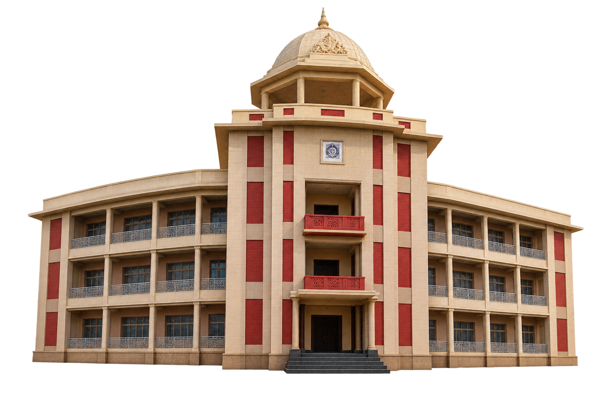

Help
How to use AR
Start:
Point the camera at the printed marker or reference image until the 3D model appears.
Rotate:
One finger drag — horizontal drag rotates horizontally, vertical drag rotates vertically.
Zoom:
Pinch with two fingers to scale smoothly; avoid over-scaling for best tracking.
Reset:
If the model drifts or tilts, tap “Reset model.”
Lighting:
Use even lighting and non-reflective backgrounds if detection is slow.
✕
Reset model
Play animation
Camera access is required
Allow camera access to start the AR experience.
On iPad: Settings → Safari → Camera, enable access or open the page over HTTPS.
Try again
